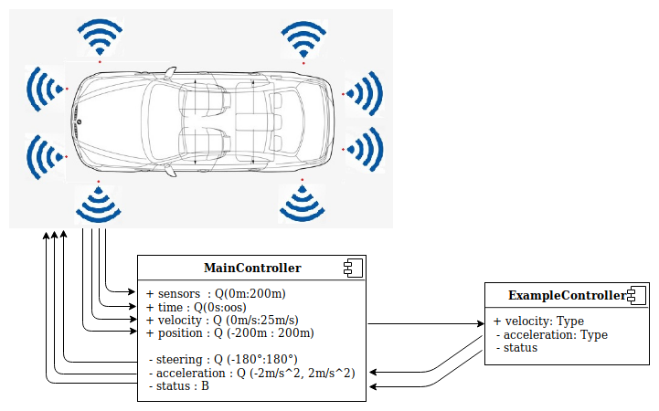

Implement the model that continuously accelerates to 10 m/s and then stops.
The car has 8 sensors to measure distances to obstacles. They are located respectively:
To solve this task it's needed to use only acceleration of the car. Changing the acceleration you may control the behavior of the car. To be able to reach 10 m/s speed, you have to accelerate the car continuously until it reaches the desired speed. Let's start with a MainController which defines the interface to the simulator. We should create a new file which has the same name like component has with .emam extension.
package controller; // The name of the folder where all .emam files are located.
component MainController{
ports
in Q(0m:200m) fl, //front left sensor with range from 0 meters to 200 meters
in Q(0m:200m) fr, //front right sensor
in Q(0m:200m) slf, //side left front sensor
in Q(0m:200m) slb, //side left back sensor
in Q(0m:200m) srf, //side right front sensor
in Q(0m:200m) srb, //side right back sensor
in Q(0m:200m) bl, //back left sensor
in Q(0m:200m) br, //back right sensor
in Q(0s:oos) time, //simulation time from 0s to infinity
in Q(0m/s:25m/s) velocity, //car velocity
in Q(-200m:200m) x, //car position X
in Q(-200m:200m) y, //car position Y
out Q(-2m/s^2:2m/s^2) acceleration, //car acceleration
out Q(-180°:180°) steering, //car steering
out B status; //whether the simulation is still running
After examination of the example, we should notice:
It was the default interface for the Simulator. It has to be define for all possible controllers. Then you may create your own components which will be connected to the mainController. Let's create a simple component and connect it to the main one. To do that, we have to create new file with following content:
package controller;
component ExampleController {
port
in Q(0m/s : 25m/s) velocity, //incoming port velocity with given range
out Q(-2m/s^2:2m/s^2) acceleration, //outgoing port which controls the acceleration of the car
out B status; //outgoing port which stops the simulation process
implementation Math{
if (velocity <= 10 m/s)
acceleration = 1m/s^2; //until the car reaches 10 m/s accelerate with 1m/s^2
else
status = 1; //When reach the velocity 10 m/s -> stop the simulation //Should be TRUE instead of 1
end
}
}
There is one incoming port and two outgoing. Firstly we should reach the speed 10 m/s then stop the simulation. The logic of the controller is implemented inside the Math{}. Inside the Math{} scope you can see if-else-end constructions and the example how to use it. When we have created the ExampleController we should import it into the MainController and then instantiate it:
package controller;
import ExampleController; // here has being imported the actual controller
component MainController{
...
instance ExampleController exampleController;
Now is time to connect the controller to the MainController.
connect velocity->exampleController.velocity;
connect exampleController.acceleration->acceleration;
connect exampleController.status->status;
}
Here we have connected the incoming port - velocity(mainController) to our instantiated controller and its corresponding incoming port velocity. Then we connect the outgoing port of velocityController.acceleration to the outgoing port of our MainController. And finally the status port of the ExampleController to status of the MainController.
Finally the connections scheme should look like that:

Eventually we should send these files to the server to process it and then execute in the simulator.
For better understanding the syntax of the EmbeddedMontiArc and get some ideas how to define modules of a controller it's a good idea to read the documentation here (https://github.com/EmbeddedMontiArc/Documentation#embeddedmontiarc-yannick).